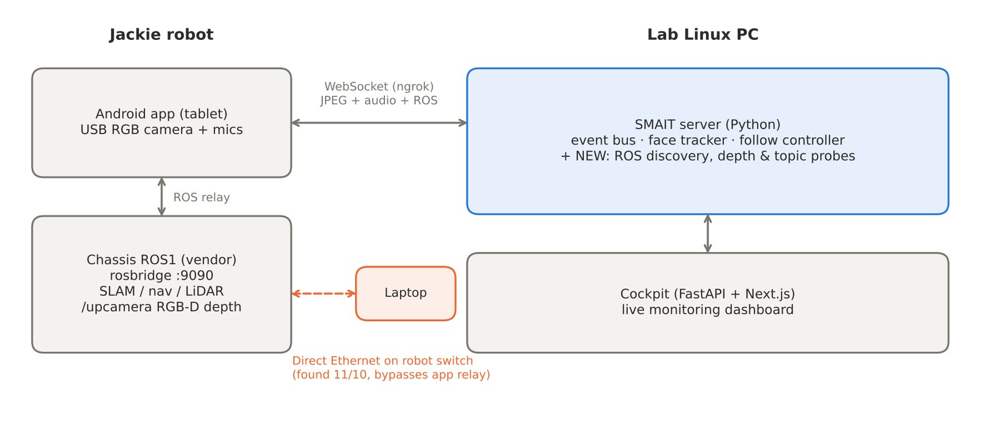
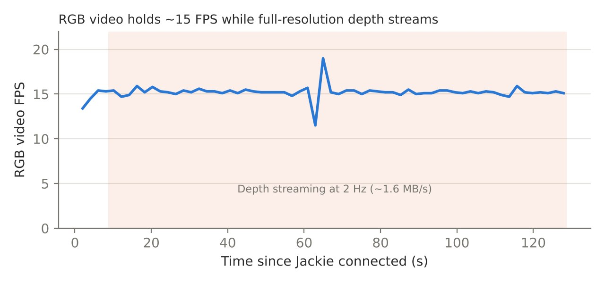
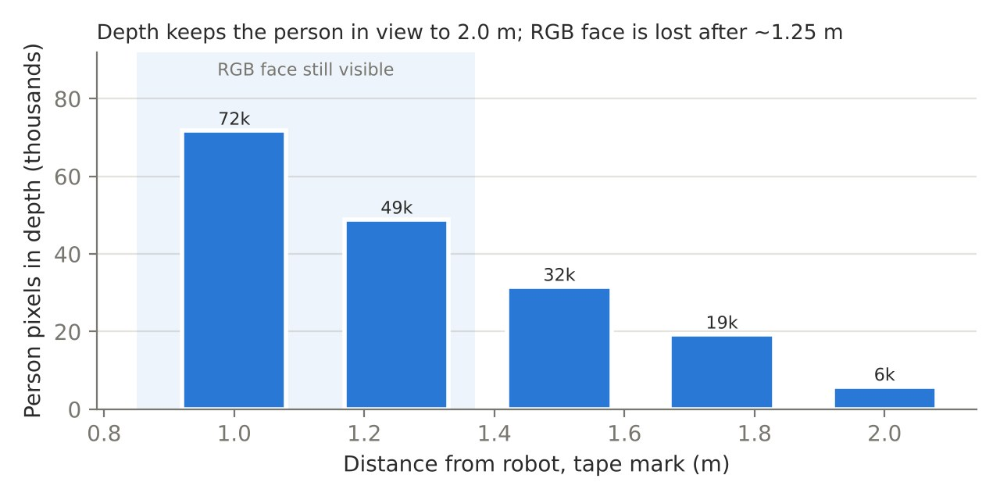
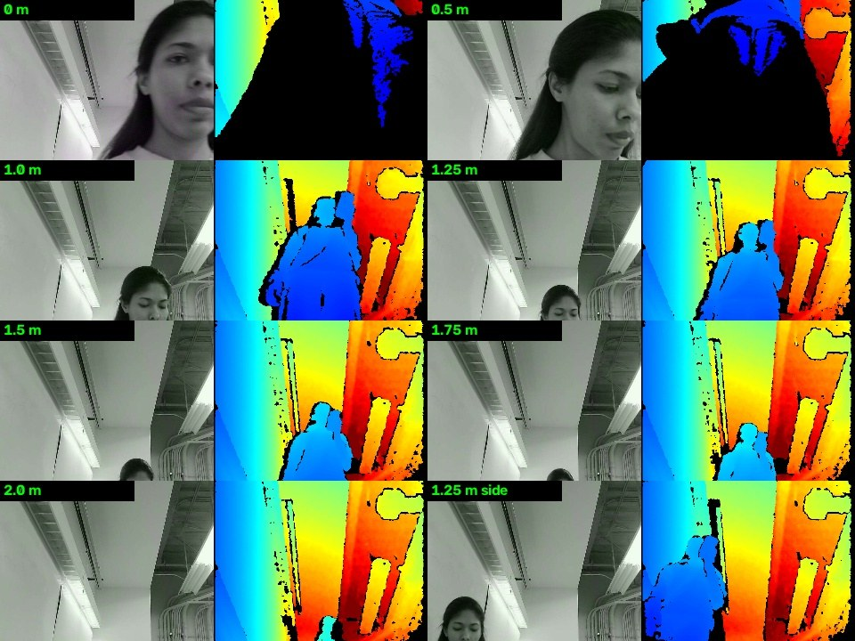

Giving a service robot a way to follow people who aren't facing it
Jackie is a concierge service robot that follows people by seeing their face. Turn away, walk side-on or step a little too far, and it loses you. My MS project adds person tracking from the robot's depth camera, connected to Jackie's existing software without changing any vendor code.
Project
MS project, BioRob Lab (advisor Dr. Lin Jiang), SJSU
Understand how Jackie's tablet app, Python server and vendor chassis talk to each other, without touching vendor code.

data flow as mapped: tablet app, vendor ROS1 chassis, SMAIT server and Cockpit dashboard; dashed = direct Ethernet path
What I built
Jackie's person-following runs through three pieces: an Android app on the tablet (with the RGB camera), the lab's SMAIT Python server (event bus, face tracker, follow controller), and the vendor's ROS1 chassis behind rosbridge, plus a Cockpit monitoring dashboard. I traced the full data flow, then wrote diagnostic modules that plug into the server's event bus and can be switched on and off. Through the app's relay, a discovery module found 297 ROS topics on the robot: navigation, costmaps, LiDAR, pose and a depth camera.
Concepts
ROS1 / rosbridge
Python asyncio
WebSockets
Reverse-engineering a software stack
Non-invasive integration
Challenges and fixes
problem
The chassis software is vendor-controlled, so changing it was off the table.
fix
Built read-only probe modules that live inside the existing server and toggle with a flag, so nothing on the robot changes.
problem
The lab PC reaches the robot only through the app's relay, which limits bandwidth.
fix
Opened the robot and found its internal network switch. A laptop plugged in there reaches the chassis's ROS bridge directly, bypassing the relay.
02
Find and characterize the depth camera
The existing follower only used the tablet's RGB camera. Was there something better on board?

RGB video holds ~15 FPS while full-resolution depth streams at 2 Hz
What I built
The topic list showed an /upcamera the existing follower never used: a depth camera publishing 640×480, 16-bit depth in millimetres, a point cloud and calibration (focal length ≈ 578 px, about 58° × 45° field of view). I wrote probes that subscribe at a set rate, save synchronized depth + RGB frame pairs with calibration, and log rate, message size and timestamp lag.
Concepts
Camera intrinsics
Depth images
Bandwidth measurement
Data logging
Challenges and fixes
problem
Each depth frame is about 820 kB as JSON. Streaming it could starve the RGB video the current follower depends on.
fix
Measured it: 120 s of full-resolution depth at 2 Hz arrived with zero drops, and the RGB video held steady at about 15 FPS.
03
Show why depth matters: orientation independence
The face-based follower fails the moment the user turns away.
same moments, both cameras: turned away, the RGB camera sees only hair; depth still sees a clean head-and-shoulders silhouette
What I built
I recorded three datasets, about 540 RGB + depth frame pairs, with the user facing the robot, turned away, side-on and at measured distances. The figure shows the core argument: when the user turns away, the face camera has nothing to track, while the depth camera still sees the person's shape.
Concepts
Experimental design
RGB vs. depth sensing
Human–robot interaction
04
Measure the range
Put numbers on how much better depth is, with a tape measure.

person size in the depth image at each tape mark: visible to 2.0 m; the RGB face is lost after ~1.25 m

RGB (left) and depth (right) at each tape mark
What I built
With tape marks every 0.25 m, I measured how much of the person the depth camera sees at each distance, using background subtraction and connected components. A standing adult stays trackable from about 0.5 m to 2.0 m at any orientation. The face camera loses the face past about 1.25 m, and only works when the user faces the robot. That's roughly double the trackable range, and it sets a recommended following distance of 1.0–1.25 m.
Concepts
Background subtraction
Connected components
Camera geometry
Measurement error analysis
Challenges and fixes
problem
Depth readings came out 12–15% shorter than the tape measure.
fix
Traced it to geometry: the camera is tilted about 30°, so depth is measured along the tilted optical axis, not horizontally. Correctable with the camera's pose.
problem
Close up, the depth image goes black.
fix
The camera is blind closer than about 0.4 m, which sets the near limit of the following distance.
05
Next: track, follow, compare
What's left, and when.
The plan
Next is a depth-based person detector with a Kalman tracker, developed offline on the recorded data, then run live on Jackie for at least 12 comparison trials against the face-based follower (early December 2026). Obstacle-aware following, integrated with Jackie's navigation where its interfaces allow, follows in spring 2027.
Concepts
Kalman filtering
Person detection in depth
A/B evaluation
Obstacle-aware following
/results
Results so far
Measured, before writing the tracker: depth is the right sensor, and it's free to stream.
~2×trackable range: 0.5–2.0 m with depth vs. about 1.25 m for the face camera, at any orientation
297ROS topics discovered on a vendor robot without changing its software
15 FPSRGB video held steady while full-resolution depth streamed at 2 Hz
Tools written so far: a ROS topic discovery module, a depth probe that saves synchronized depth + RGB pairs with calibration, a topic probe for rates and timestamp lag, a direct-link bandwidth test, and analysis scripts for range estimation. Plus a lab runbook and a map of the codebase.